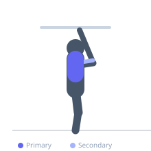

Exercise guide / Wide-Grip Pull-Up
Wide-Grip Pull-Up
The wide-grip pull-up is performed with the hands significantly wider than shoulder-width in a pronated grip, which shortens the range of motion but increases the mechanical tension on the latissimus dorsi by emphasizing shoulder adduction over elbow flexion. The wider hand position reduces biceps involvement and isolates the outer lats more directly.
Primary muscles
latissimus dorsi
Secondary muscles
teres major
rhomboid major
biceps brachii short head
Stabilizers
trapezius lower
transverse abdominis
Equipment
Pull-Up Bar (Doorframe)
Optional
Pull-Up Bar (Wall-Mounted)


Starting position
- Grasp the pull-up bar with a pronated grip wider than shoulder-width — roughly 1.5× shoulder width. Hang in a full dead hang.
Setup
- Use a straight pull-up bar long enough for a wide grip. Avoid grip positions so wide they compromise shoulder health.
Steps
- Step 1: Begin in a dead hang with the wide pronated grip.
- Step 2: Depress and retract the scapulae slightly before pulling.
- Step 3: Pull the body up by driving the elbows down and in toward the hips.
- Step 4: Aim to bring the chest to the bar or pull until the chin clears.
- Step 5: Lower slowly back to full extension.
Coaching cues
- Drive the elbows toward the hip pockets
- Think 'lat spread' — visualize spreading the elbows wide as you pull
- Keep the chest up and spine long
Breathing
- Exhale as you pull up. Inhale as you lower.
Range of motion
- Full dead hang to chin above bar. The wider grip reduces total range of motion compared to shoulder-width — this is normal.
Tempo
- 2-1-3-0
Common mistakes
- Gripping excessively wide, which stresses the shoulder joint and reduces ROM
- Not achieving full arm extension at the bottom
- Pulling only to chin level when chest-to-bar is achievable
Safety
- Very wide grips place more stress on the shoulder joint — use a grip no wider than 1.5× shoulder width for most trainees
- If shoulder discomfort occurs, reduce grip width
Training
- strength: 3–8 reps
- hypertrophy: 8–12 reps
- strength: 4–5 sets
- hypertrophy: 3–4 sets
- Rest: {'strength': 150, 'hypertrophy': 90}